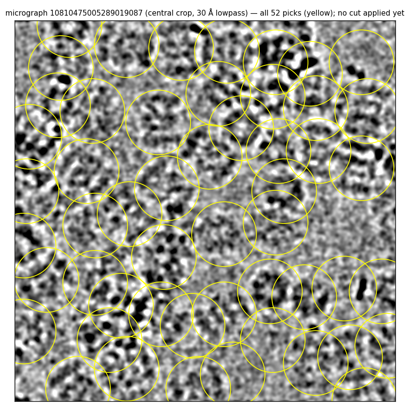

Scientific evaluation environment
Grading the reconstruction task
How each cryoSPARC run is graded: subscores and weighted sum. Per-run results for every subscore are on the benchmark page. Design principles are in the Env spec.
Outcome & procedure based rewards
A run is scored on two families of reward, weighted equally:
- Outcome: how good the reconstruction is, and whether it is the correct structure.
- Map quality: does the reconstruction score well on no-reference, in-domain map metrics — global resolution, local-resolution uniformity, FSC-curve shape, and anisotropy.
- Map similarity: is the reconstruction consistent with the deposited map — map-to-deposit cross-correlation and map-to-deposit FSC.
- Handedness gate: a mirror-image map can score well on map quality alone yet be the wrong structure, so the whole family is multiplied by a gate that caps it to zero when the hand is inverted.
- Procedure: how sound the agent's decisions were, independent of the final resolution; a run can reach a good map off poor decisions, and this is where that shows.
- Trajectory: did the agent build a complete, correctly-ordered pipeline (tree completeness — gated on actually reaching a finished 3-D map) and how closely did it follow the expert recipe (tree similarity).
- Interactive jobs: the by-eye, iterative decisions the agent makes during reconstruction.
- Select-2D: how many 2-D classes it kept to seed template picking, and how well its keep/reject of classes tracks class quality.
- Particle picks: agreement of the agent's final particle coordinates with the expert reference.
Each family is built from named subscores, every one a value in [0, 1] with a fixed direction (higher = better). The next two sections define them; the last shows the roll-up.
Outcome subscores
Map quality
Four axes read from the run's own two half-maps and final volume: the overall resolution, plus three orthogonal views of how that resolution varies — across frequency, across space, and across direction. Each is normalized on a fixed scale between a floor (a minimal pipeline run with random interactive decisions on the same movies — no decision skill) and a ceiling (an expert's by-hand reconstruction of the same movies — 1.0). Both ends use the same 20-movie subset, so the axis isolates technique, not how much data was available.
| Subscore | Wt | What it is · how it's computed |
|---|---|---|
| global resolution | 0.40 | The map's overall resolution. The gold-standard Fourier shell correlation (FSC) between the run's two independently-refined half-maps1, read at the 0.143 threshold2 — recomputed from the half-maps under one fixed loose mask used for every map. Floor-to-ceiling normalized (lower Å = better). |
| FSC-curve shape | 0.20 | Signal present across all spatial frequencies, not just at the cutoff. The mean of that half-map FSC curve over the resolved band — the area under it, in [0, 1] — rewarding a curve that stays high out to the resolution limit. |
| local-resolution spread | 0.20 | How uniform resolution is across the map. A fixed-size window slid over the molecule yields a local half-map FSC resolution at each point3; the score is the 5–95th-percentile spread (Å) of those values (tighter = more uniform). |
| anisotropy (cFAR) | 0.20 | How directionally even the resolution is. The conical FSC area ratio (cFAR): the half-map FSC integrated within ~100 cones spanning all directions, reduced to the 5th-/95th-percentile cone ratio4 (1.0 = isotropic). T20S is near-isotropic, so this axis carries little range here. |
Computation references. 1 Gold-standard FSC from independent half-maps — Scheres & Chen, Nat. Methods 2012. 2 FSC = 0.143 resolution criterion — Rosenthal & Henderson, J. Mol. Biol. 2003. 3 Windowed local-resolution FSC — Cardone, Heymann & Steven, J. Struct. Biol. 2013. 4 Directional (conical) FSC / 3DFSC — Tan et al., Nat. Methods 2017. (FSC-curve shape is a custom summary of the standard FSC curve, with no separate reference.)
Map similarity
Agreement with the deposited EMD-6287 map. These two metrics ask whether the run reconstructed the same 3-D shape as the published structure — how closely the run map's density matches the deposit's, both point-for-point in real space (cross-correlation) and shell-by-shell in Fourier space (FSC).
The deposited map is built from the full dataset — 196 movies, ~50,000 particles — and reaches 2.8 Å. The cryoSPARC tutorial, and so every run here, uses a 20-movie subset of that same dataset, which reconstructs to ~3.1 Å. A 20-movie map cannot reach the full-data resolution no matter how good the technique, so each metric is normalized against a resolution-matched structure rather than the raw 2.8 Å deposit: the deposit is low-pass filtered down to the run's own resolution — the closest a subset run could come — and the run is scored against that, computed with the same software and masking pipeline applied to both maps.
| Subscore | Wt | What it is · how it's computed |
|---|---|---|
| map–map CC | 0.50 | Real-space cross-correlation between the run map and the deposited map, after rigid-body placing the run map into the deposit's frame under a fixed hand convention. Normalized to the resolution-matched structure. |
| map–map FSC@0.5 | 0.50 | The resolution (Å) at which the Fourier shell correlation between the run map and the deposited map5 falls through 0.5 — the frequency where the two maps stop agreeing. Normalized to the resolution-matched structure (lower Å = better). |
Computation reference. 5 Fourier shell correlation between two maps, 0.5 criterion — Harauz & van Heel, Optik 1986; van Heel & Schatz, J. Struct. Biol. 2005.
The handedness gate
Cryo-EM maps have an intrinsic hand; a mirror-image (enantiomer) map can have excellent resolution and internal consistency yet be the wrong structure. The gate aligns both the run map and its mirror to the reference: if the mirror fits clearly better, the outcome family is multiplied by 0; an ambiguous case is capped at 0.6; a clear right hand passes at 1.0.
Procedure subscores
The procedure subscores capture the correctness of the process, and can award partial credit for a sound process that reached a poor result. For the cryoSPARC workflow this splits into the overall trajectory and the agent's execution of the interactive jobs, weighted equally (0.50 each). The trajectory grade is itself split into tree completeness and tree similarity; because several distinct trajectories can reach a good reconstruction through sound procedure, completeness is weighted above similarity.
Interactive jobs require decision-making from the agent — often iterative, and from visual input. For T20S (and essentially every cryo-EM workflow) the interactive jobs are selecting 2-D class averages and picking individual particles out of the micrographs. Several ML implementations of these steps exist, usually built on vision models, so these subscores are weighted lower. A refined version would isolate the quality of the iterative decision-making from the quality of the visual reasoning; for now we simply measure overall performance on each interactive job.
Trajectory
Grades the job graph the agent built and ran, from two scores summed 0.70 · tree completeness + 0.30 · tree similarity.
| Subscore | Wt | What it is · how it's computed |
|---|---|---|
| tree completeness | 0.70 | Is the job graph a complete, correctly-ordered pipeline that actually ran to a finished 3-D map? Every job maps to a logical capability (any picker → "pick", any refinement → "refine-3D"), so a different-but-valid pipeline passes. Job-completion gate: the score is 0 unless a completed 3-D refinement is reachable from the imported movies, and only completed jobs count toward coverage — otherwise gate × (0.7 · capability coverage + 0.3 · ordering), where ordering is the fraction of required precedences that hold (e.g. picking before extraction). |
| tree similarity | 0.30 | How closely the agent's set of jobs matched the tutorial recipe — multiset overlap (Jaccard) of job types against the tutorial's, the one place we compare against the literal reference tree. |
Interactive jobs
The agent's two by-eye decisions, weighted equally: select-2D and particle picks. Select-2D is itself two separately-computed scores — template and refine, each 0.50 of select-2D — so within interactive jobs the three scores sum 0.25 · template + 0.25 · refine + 0.50 · particle picks.
| Subscore | Wt | What it is · how it's computed |
|---|---|---|
| select-2D · template | 0.25 | How many 2-D classes the agent kept to seed template picking (target ~2; banded on distance from 2), times the CryoSift6 quality of the kept classes (CryoSift rates each 2-D class 1 = best … 5 = worst). |
| select-2D · refine | 0.25 | How well the agent's keep/reject of classes for the refinement input tracks CryoSift's good (< 3.5) / bad call — F1 of precision (kept classes that are good) and recall (good classes that were kept). |
| particle picks | 0.50 | F2 agreement7 between the agent's final particle coordinates and the golden coordinates on the same micrographs (recall-weighted, the cryo-EM convention). |
Computation references. 6 CryoSift — a CNN that scores cryo-EM 2-D class-average quality — Schäfer et al., Acta Cryst. F 2025. 7 F-measure, recall-weighted (β = 2) — van Rijsbergen, Information Retrieval 1979.
Every one of these scores is computed for the agent runs; a subscore with no data drops out and its siblings absorb its weight, so a not-yet-computed metric never earns fabricated credit. Per-subscore mechanics and worked examples are in Technical details at the foot of the page.
Weighted Score
Each subscore is a value in [0, 1]. Within a family, subscores combine into a weighted average; a subscore with no data drops out and its siblings absorb its weight, so a not-yet-computed metric never silently scores zero or full credit. Outcome's two halves (map quality and map similarity) average 50/50 and are then multiplied by the handedness gate; on the procedure side, trajectory's tree completeness carries a job-completion gate. The two families average 50/50 to give the run's total.
Technical details
How each subscore is computed, with a worked example and the agent's actual inputs. Expand a subscore for the mechanics.
Outcome subscores
Map quality — the four no-reference axes
Every axis is read from the run's own two half-maps: the particle set is split in two and each half is reconstructed independently, so the two maps share the real signal but carry independent noise. All four axes are built on the Fourier shell correlation (FSC) between them — the standard way to measure cryo-EM map resolution with no answer key. Both half-maps are Fourier-transformed; for each spherical shell of spatial frequency k (in Å⁻¹), the FSC is the normalized correlation of the two maps' Fourier coefficients in that shell.
FSC(k) = Σₖ F₁·conj(F₂) / √( Σₖ |F₁|² · Σₖ |F₂|² ) — F₁, F₂ = the two half-maps' Fourier coefficients; conj = complex conjugate; Σₖ runs over the voxels in shell k
The curve starts near 1 at low k (the halves agree on coarse shape) and falls to 0 at high k (only independent noise is left). We recompute it ourselves from the two half-map files (downloaded from the cryoSPARC refinement job) under one fixed loose mask, in NumPy — no cryoSPARC or Phenix — so one identical recipe scores every map.
Global resolution (weight 0.40) is the resolution d = 1/k* at the gold-standard 0.143 crossing, where k* is the frequency at which the half-map FSC falls through 0.143 (two-half-map FSC, Scheres & Chen 2012; 0.143 criterion, Rosenthal & Henderson 2003). FSC-curve shape (0.20) is the mean FSC over the resolved band — the curve's area — which rewards signal across the whole band out to that crossing, not just the single point.
AUC = (1/M) · Σ FSC(kᵢ) for i = 1…M — mean over the M shells from the first out to the 0.143 crossing
Local-resolution spread (0.20) repeats the FSC inside a fixed-size window slid across the molecule (windowed local resolution, Cardone et al. 2013), giving a resolution at every point; the score is the 5–95th-percentile spread d₉₅ − d₀₅, where d₉₅ and d₀₅ are the 95th- and 5th-percentile per-window resolutions (tighter = more uniform). Anisotropy / cFAR (cone FSC-area ratio, 0.20) repeats the FSC inside ~100 directional cones (directional/3DFSC, Tan et al. 2017); each cone's area is the area under its own directional FSC curve (the same measure as FSC-curve shape), and cFAR = (5th-percentile cone area) / (95th-percentile cone area), so 1.0 means the map is equally resolved in every direction.
Example — reading global resolution off the curve. The plot below is the recomputed half-map FSC for one agent's reconstruction. Find where the curve drops through the dashed 0.143 line and turn that frequency into a distance: the crossing here is at k ≈ 0.317 Å⁻¹, so global resolution = 1 / 0.317 ≈ 3.15 Å. The same curve gives FSC-curve shape (its shaded area), and recomputing it per-window or per-cone gives local resolution and cFAR.
Then normalization. Each raw value is placed on [0, 1] between a floor (a minimal pipeline with random interactive decisions on the same 20 movies) and a ceiling (an expert's by-hand reconstruction of the same movies).
norm = clamp₍₀,₁₎( (floor − value) / (floor − ceiling) ) — for the Å axes (lower = better); the higher-is-better axes use (value − floor)/(ceiling − floor)
Both ends use the same 20-movie data, so each axis isolates technique, not how much data was available.
Map similarity — vs the deposited map
Two metrics ask whether the run reconstructed the same 3-D shape as the published structure (EMD-6287). Both first place the run map into the deposit's frame — a rigid-body alignment plus one fixed global hand flip applied to every map (not a per-map best-hand search), done by the map-comparison driver — so a wrong-hand map ends up doubly flipped and its agreement collapses rather than quietly aligning (the handedness gate is the dedicated check).
Map–map CC (weight 0.50) is the real-space cross-correlation of the two density maps over the masked voxels.
CC = Σᵥ (aᵥ − ā)(bᵥ − b̄) / √( Σᵥ (aᵥ − ā)² · Σᵥ (bᵥ − b̄)² ) — aᵥ, bᵥ = density at voxel v of the run map and the reference; ā, b̄ = their masked means
It is one number in [−1, 1]: 1 = identical shape, 0 = unrelated. Map–map FSC@0.5 (0.50) is the frequency-resolved companion — the same FSC defined under map quality above, but computed between the run map and the reference — reported as the resolution d = 1/k where it falls through 0.5, the classic threshold for two independently-derived maps (Fourier shell correlation, Harauz & van Heel 1986; van Heel & Schatz 2005). It shows where in frequency the two maps stop agreeing.
Example — reading map–map agreement. The plot is the FSC between one run's map and the reference. Its 0.5 crossing is at k ≈ 0.286 Å⁻¹ → 3.5 Å: the two maps agree out to ~3.5 Å and diverge beyond. The same pair gives a real-space CC of, say, 0.65.
Then normalization. A 20-movie subset map cannot reach the full-data 2.8 Å of the deposit no matter the technique, so neither metric is scored against the raw deposit. Each is scored against a resolution-matched structure — the deposit low-pass filtered to the run's own ~3.1 Å, the closest a subset run could match — computed with the same software and masking applied to both maps. Map–map CC is divided by the resolution-matched ceiling CC — the best correlation a subset-resolution map could have with the deposit — then re-baselined so half the ceiling maps to 0; map–map FSC@0.5 is taken as ceiling-Å / run-Å.
Procedure subscores
Trajectory — tree completeness + tree similarity
A cryo-EM reconstruction is a directed graph of processing jobs. Trajectory grades that graph two ways.
Tree completeness (weight 0.70) asks whether the graph is a valid and sufficient reconstruction, independent of matching any particular recipe. Every job is mapped to one of nine logical capabilities a single-particle pipeline must cover — import, motion correction, CTF (contrast-transfer-function) estimation, particle picking, extraction, 2-D classification, class curation, initial 3-D model, and 3-D refinement — so a different-but-valid pipeline (e.g. a different picker) still counts. The score combines coverage and ordering under a hard gate.
tree completeness = G · ( 0.7·C + 0.3·O ) — C = capabilities covered / 9; O = ordering constraints satisfied / total; G = the gate (0 or 1)
C (coverage) is the fraction of the nine capabilities present as completed jobs. O (ordering) is the fraction of the required precedences that hold along the dependency graph: motion follows import; CTF estimation and particle picking each follow motion; extraction follows both CTF and picking; then 2-D classification → curation → initial model → refinement. (For example, picking must precede extraction, and extraction must precede classification.) G (the job-completion gate) is 1 only if a completed 3-D refinement is reachable from the imported movies, else 0 — no credit for a graph that never produces a 3-D map, and only completed jobs count toward C and O.
Tree similarity (0.30) is the one place we compare to the literal tutorial recipe: the multiset (with-multiplicity) Jaccard overlap of the agent's job types against the tutorial's.
tree similarity = 1 − ( |extra| + |missing| ) / |union| — extra = agent jobs not in the tutorial; missing = tutorial jobs the agent dropped; union = all job types, with multiplicity
A legitimately different pipeline scores below 1 here by design — tree completeness, weighted higher, is what protects it.
Example — what the agent built. An agent whose graph imports movies → corrects motion → estimates CTF → picks → extracts → classifies in 2-D → curates → builds an initial 3-D (ab-initio) model → refines covers all nine capabilities in a valid order and reaches a completed refinement, so C = 1, O = 1, G = 1 → tree completeness 1.0. If it also skipped the tutorial's two optional denoise/junk-removal jobs, those count as missing and pull tree similarity below 1, while tree completeness stays 1.0 (optional polish is never required).
Interactive jobs · Select-2D — count, class quality, and selection alignment
After particles are extracted, cryoSPARC groups them into 2-D class averages — each a denoised composite of many particles caught in the same orientation, so a class is a clean picture of the molecule from one viewing direction. For the T20S proteasome (a barrel with D7 symmetry) two views dominate: the top view, looking down the seven-fold axis (a ring with seven-fold symmetry), and the side view, looking across it (a rectangular, striped profile of the stacked rings). The agent curates these classes twice, and we score both passes; together they make up select-2D.
Template pass (weight 0.50 within select-2D). The agent keeps a tight set of classes to seed an automated template-based picker. The target is exactly two — one clean top view and one clean side view — because those two templates already represent every orientation the picker needs; keeping more drags in redundant or junk templates. The score multiplies a count band by a class-quality factor.
template = band(|n − 2|) · (5 − q̄) / 4 — n = classes kept; band: |n−2| = 0→1.0, ≤1→0.85, ≤3→0.55, ≤6→0.30, ≤11→0.12, else 0; q̄ = mean CryoSift score of the kept classes
CryoSift is a published convolutional neural network that rates a 2-D class average from 1 (best) to 5 (worst); it is trained on tens of thousands of human-labelled cryoSPARC/RELION classes and reads each class image plus a few mass/metadata features. We run the released model on the agent's class averages (Schäfer et al., Acta Cryst. F 2025; open-source, Stagg lab / Magellon). The factor (5 − q̄)/4 maps its 1–5 scale to [0, 1], so a right-count but junk selection is still down-weighted.
Refine pass (0.50 within select-2D). For the broader set the agent keeps to feed 3-D refinement, only how well the selection tracks quality matters, so we score the agreement between the agent's keep/reject and CryoSift's good (score < 3.5) / bad split as the F1 score — the harmonic mean of precision and recall, the standard measure of overlap between two yes/no labellings (van Rijsbergen 1979).
F1 = 2PR / (P + R) — P (precision) = good classes kept / all classes kept; R (recall) = good classes kept / all good classes
Example — what the agent did. Below are the 2-D class averages this agent was given for its template pass. The two crispest, highest-population classes are a top view (the seven-fold ring) and a side view (the striped rectangle). A strong agent keeps just those two → band(|2 − 2|) = 1.0, and if their mean CryoSift score is 1.9 the quality factor is (5 − 1.9)/4 = 0.78, so template = 0.78. A weak agent that keeps a dozen classes — sweeping in blurred, low-count panels — falls far down the count band toward 0, even if a few of its kept classes are fine. In the refine pass, an agent that keeps the CryoSift-good classes and drops the junk reaches precision and recall near 1, so F1 ≈ 0.95.

Then normalization. Both passes already return values in [0, 1], so they need no floor/ceiling rescaling; they average 50/50 into select-2D, which is in turn one half of interactive jobs.
Interactive jobs · Particle picks — F2 against expert coordinates
Picking is locating individual particle images in each noisy micrograph — the raw input to everything downstream. It happens more than once in the workflow: an initial blob pick bootstraps the first 2-D classes, then a template pick (using the select-2D templates above) re-picks more completely. The grader scores the agent's final pick set — the particles it carries forward into refinement — because that set, not the intermediate ones, determines the reconstruction.
Because every run picks from the same 20 micrographs, the agent's final coordinates can be compared directly to an expert ("golden") pick set on those micrographs. A pick counts as matched if it lands within a fixed radius of a golden particle (greedy nearest-neighbour, each golden particle matched at most once). From the matches we form precision and recall and combine them as the recall-weighted F2 score (the F-measure with β = 2; van Rijsbergen 1979).
F2 = 5PR / (4P + R) — P (precision) = matched / agent picks; R (recall) = matched / golden picks
Recall is weighted above precision (β = 2) because a missed real particle is the costlier error here: downstream curation removes most false positives, but a particle never picked is gone for good. F2 is already in [0, 1] and needs no further normalization.
Example — what the agent did. Below, one agent's final picks (yellow) are overlaid on a micrograph. Suppose those picks recover 91% of the golden particles (recall R = 0.91) while 84% of the agent's picks are real (precision P = 0.84). Then F2 = 5(0.84)(0.91) / (4·0.84 + 0.91) ≈ 0.90. A too-tight cut would miss real particles (recall falls, F2 drops sharply); a too-loose one would admit ice and carbon edges (precision falls, F2 drops more gently).
